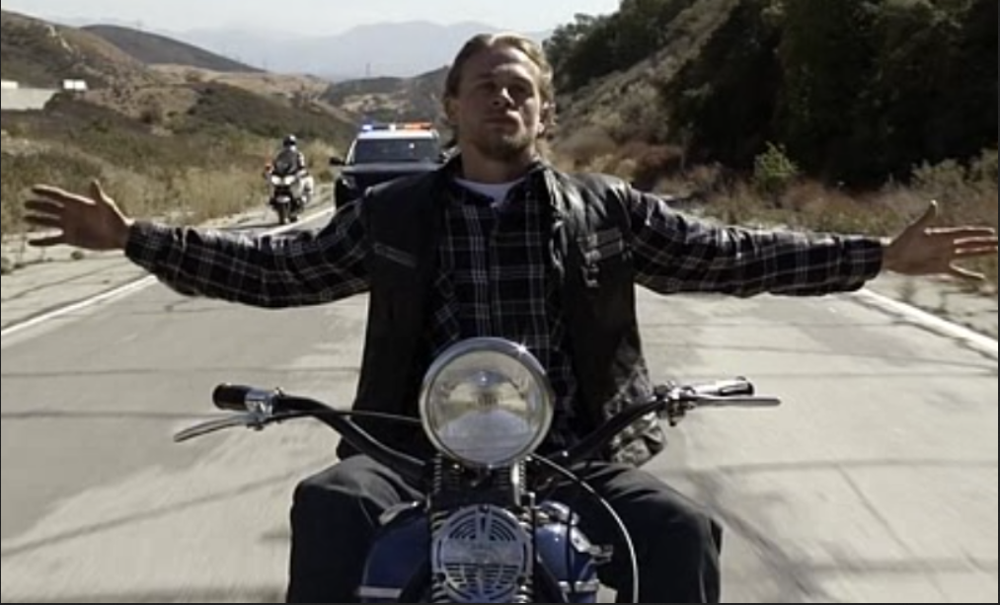
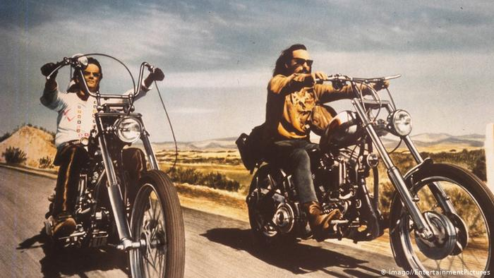

Motorcycles | Mult-media
Series and Movies about Motorcycles
January 2020
Motorcycle in popular culture and multi-media. A selection of shows, films and other things that revolve around the vehicle.
Sons of Anarchy
One of the most recent big-ticket series about Motorcycles. The series follows a Californian motorcycle gang struggling with a bloody business and family issues. The show quite marvelously portrays the struggles and developments of a young man seeking his place in life. See the trailer here.
Zen in the Art of Motorcycling Maintenance
An applied take on meditation and mindfulness. The author describes how he learned to 'appreciate the moment' as he was working on his most prized vehicle. If you don't have time to read the book, you may read the summary here.
The Harley-Davidson and Indian Wars
Non-fiction book about the struggle for market dominance between Indian and Harley Davidson. An interesting read. Read a review about this book here
Jax Teller (from Sons of Anarchy) enjoying the freedom of motorcycling and finally coming to a resolution of his internal struggles
American Chopper
TV show about a garage making custom motorcycles and then delivering them to clients. It has some scenes with the typical maco-versus-macho friction you can expect in such a garage. Watcht the trailer here
Gangland Undercover
The dramatized biography of an undercover agent (Charles Falco) in a motorcycle gang. The show has numerous action scenes and is not for the faint of heart. Check it here.
Easy Rider
Iconic movie about two men trying to make their way to the festival of Mardi-Gras. It's an iconic film with typical 70s songs ('If 6 was 9' by Jimmi Hendrix and Steppenwolf with Born to be Wild). Easy Rider is quite a good 'black box' for life and values of youth in the 1970s ('the revolutionary times' and formation of pop culture).
A still from the movie Easy Rider with Dennis Hopper and Peter Fonda
Mayans M.C.
The sequel to Sons of Anarchy (mentioned before). It portrays the motorcycling world like none other. The cast did a tremendous amount of research and reached out to real motorcycle gangs throughout America. Read the plot here.